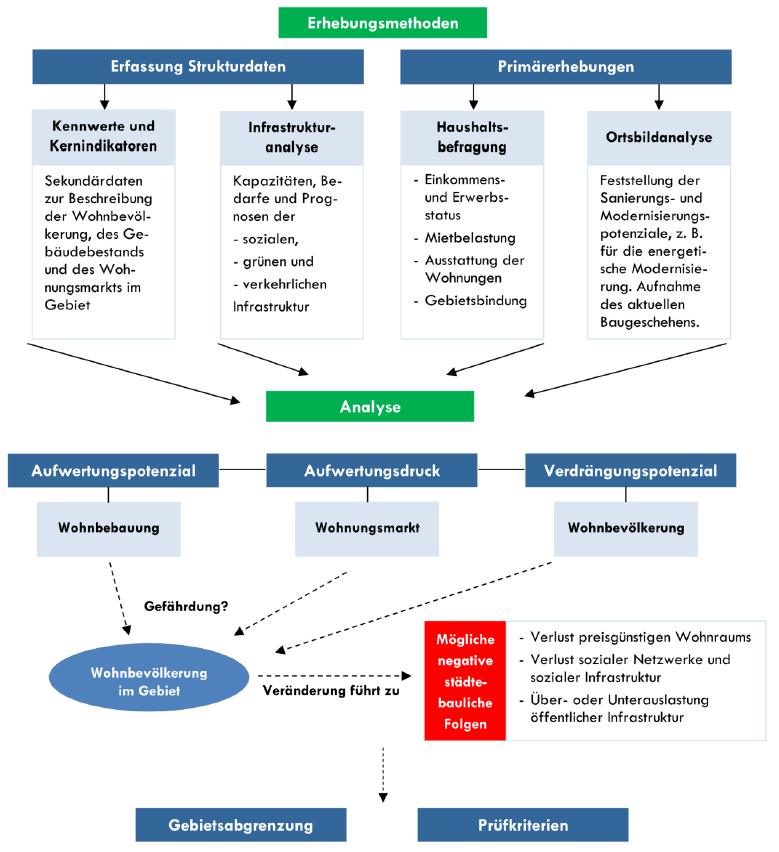
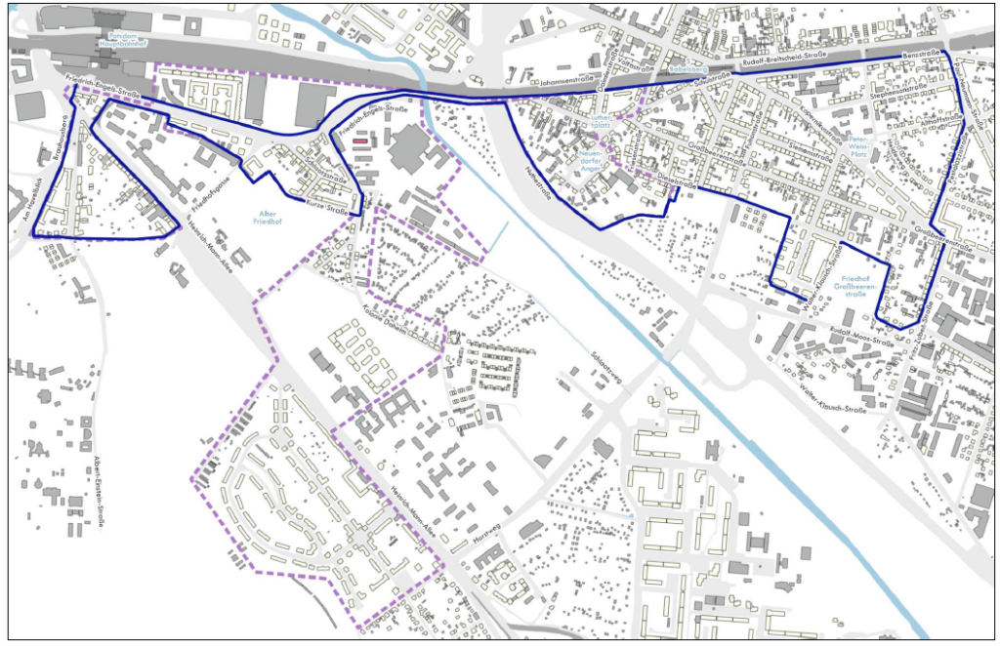

Wir als Anwohner*innen-Initiative Teltower Vorstadt (AITV) setzen uns seit 2019 dafür ein, dass unser Kiez und unsere Nachbarschaft in ihrer Konstellation erhalten bleiben.
Dafür engagieren wir uns neben der initialen Begleitung des Bauvorhabens am RAW auch seit 2020 für das Voranbringen der Erstellung einer sozialen Erhaltungssatzung.
An dieser Stelle wollen wir eine „Fragen & Antworten“ Rubrik für alle Anwohner*innen im Untersuchungsgebiet zur Verfügung stellen.

Wer hier noch nicht die Antwort auf die eigene/n Frage/n gefunden hat, der kann mittwochs gerne ab 19 Uhr zum „Mittwochstresen“ ins freiLand (Haus 2) kommen, wo wir versuchen euch so gut wir können zu unterstützen.
Es findet auch eine von der Stadtverwaltung und LPG mbH organisierte öffentliche Informationsveranstaltung am 11.10.2022 von 19.00 – 20.30 Uhr im freiLand, Friedrich-Engels-Str.22, 14473 Potsdam (Haus Spartacus) statt, an der noch offene Fragen direkt an die Verwaltung gerichtet werden können.
Wir möchten darauf hinweisen, dass wir als AITV keine Fachkräfte im Gebiet der sozialen Erhaltungssatzung sind und nur unsere eigenen Erfahrungswerte und Interpretationen ohne Gewähr widergeben.
Gemäß Anschreiben können Fragen aber auch gerne direkt an die Verwaltung oder beauftragte Firma gerichtet werden.
Landeshauptstadt Potsdam
- BefragungSES@rathaus-potsdam.de
LPG mbH / Herr Drescher
- (+49) 030 816 16 03 94
- office@lpgmbh.de
FAQ – Häufige Fragen
Zusammenfassung Informationsveranstaltung mit weiteren Fragen
Wer ist die Anwoner*innen-Initiative Teltower Vorstadt? / Hat das etwas mit dem RAW zu tun?
Die AITV ist ein Zusammenschluss motiverter Nachbar*innen, die sich im Zuge des Bebauungsplans zum RAW-Projekt nach 2018 zusammen getan hat, um ihren Sorgen, Bedenken und Wünschen gegenüber der Stadt und Verwaltung Gehör zu verschaffen.
Wir haben den Prozess der Abwägungen zum RAW-Bauprojekt begleitet, tun dies weiterhin kritisch und informieren darüber hinaus die Anwohnerschaft proaktiv zum Voranschreiten.
Im Zuge des RAW-Projektes kam dann der Vorschlag der Initiierung einer sozialen Erhaltungssatzung, um „zumindest“ Luxussanierungen im Viertel und damit Verdrängung der aktuellen Anwohnerschaft durch bauliche Maßnahmen zu verhindern. Daher liegt unser Aktionsfokus aktuell auf der Umsetzung des Feinscreenings zur sozialen Erhaltungssatzung „südöstlich des Hauptbahnhofes“. Wir freuen uns immer über Gleichgesinnte mit Ideen und Vorschlägen.
Was passiert mit meinen Daten (nach der Umfrage)?
Keine Sorge, deine Daten werden anonym, ohne Bezug zu Personendaten, in Blockeinheiten (ca.4800 Fragebögen verteilt auf 31 „Blöcke“/siehe Karte) ohne vollständige Adresse oder Namen erhoben.
Außerdem werden sie nicht an die Stadt geschickt, sondern an ein unabhängiges, auf dem Gebiet der Auswertung spezialisiertes, Unternehmen namens „LPG mbH“ geschickt. Dort werden die Daten verarbeitet und im Anschluss (gegen Q1/2023) direkt gelöscht.
Wie läuft die Befragung ab?
Mit der Versendung der Umfragebögen zum Feinscreening wird allen Haushalten im Untersuchungsgebiet die Möglichkeit geboten, sich bei der Erstellung der sozialen Erhaltungssatzung in Potsdam proaktiv zu beteiligen.
Mit Erhalt haben die Haushalte dann etwa 3-4 Wochen (bis 25.10.2022) Zeit, die Fragebögen im vorfrankierten Umschlag postalisch an LPG mbH zurückzuschicken oder digital mit den angegeben Zugangsdaten einzureichen (eine Doppeleinreichung ist nicht möglich).
Ende Frühjahr 2023 sind dann hoffentlich erste Ergebnisse im Zuge einer weiteren öffentlichen Veranstaltung zu erwarten
Was wird alles in die Analyse einbezogen?
Neben den in der Haushaltumfrage erhobenen Daten werden außerdem seitens der Stadt noch weitere Daten in die Analyse einbezogen (siehe Grafik).
Diese Daten sollen ermöglichen, Rückschlüsse auf eine potenzielle Veränderung der Quartierszusammensetzung durch Verdrängungseffekte aufgrund von baulichen Maßnahmen ziehen zu können.

Was weiß man über die LPG mbH?
„Die [Landesweite Planungsgesellschaft mbH] bietet in sämtlichen Bereichen der Stadt- und Regionalplanung, Raum- und Umweltplanung sowie in der Verkehrsplanung Planungs- und Beratungsleistungen an. Schwerpunkt unserer Arbeit sind informelle Planungen in den Themenbereichen: Stadt- und Regionalentwicklung, Soziales Erhaltungsrecht, Kooperation und Programmbetreuung, Quartiersentwicklung“. (LPG mbH)
Sie haben in mehreren Städten Untersuchungen durchgeführt.
Wofür eine soziale Erhaltungssatzung?
„Im Mittelpunkt des sozialen Erhaltungsrechts steht die Erhaltung der Zusammensetzung der Wohnbevölkerung aus städtebaulichen Gründen, die sich aus dem jeweiligen örtlichen Zusammenhang ergeben müssen. Im optimalen Fall korrespondieren die Bevölkerungsstruktur, das Wohnraumangebot und die öffentliche Infrastruktur eines Quartiers miteinander, sodass eine Veränderung der Bevölkerungszusammensetzung dazu führen kann, dass negative Auswirkungen auf die bereitgestellte Infrastruktur oder die Versorgung mit angemessenem Wohnraum möglich sind. Für den Erlass einer sozialen Erhaltungssatzung ist zu ermitteln, ob die ansässige Wohnbevölkerung zum einen unter einem Verdrängungsdruck steht und zum anderen auf die Wohnungen und die Infrastruktur im Quartier angewiesen ist.“ (LPG mbH)
Nähere Informationen findet ihr auch in unserem Blog.
Warum werden so viele Daten zum Wohnungszustand, -ausstattung und Finanzen abgefragt?
Aus den anderen Bereichen der Grafik zur Datenanalyse (Infrastrukturanalyse, Kennwerte und Kernindikatoren, Ortsbildanalyse) können bereits allgemeine Erkenntnisse zum Quartier gewonnen werden (z.B. Alter der Gebäude).
Um eine umfangreiche Einschätzung zum Gefährdungspotenzial bei baulichen Maßnahmen zu erhalten, bedarf es der detaillierteren Erfassung von Daten zur Haushaltssituation wie Ausstattung, Kalt- und Warmmiete, Verhältnis der Miete zum Haushaltseinkommen (Kostendruck), usw.
Wie finde ich das Baujahr des Hauses meiner Wohnung heraus?
Uns fallen zwei Möglichkeiten ein:
(1) in der letzten Mieterhöhung steht welches Mietspiegelsegment Basis der Berechnungen ist (z.B. B6), anhand dieser Angabe kann man im Mietspiegel auf das grobe Baujahr schließen
(2) im Energieausweis des Hauses steht das genaue Bauhjahr der Immobilie
Wie bekomme ich eine passende Antwort auf die Frage: Fenster (überwiegend)?
Die Stadtverwaltung äußert sich dazu wie folgt:
Sie sagt, „dass die Art der Verglasung eigentlich recht einfach beim Blick auf das Innere der Fensterrahmen erkennbar ist. Bei einer Dreifachverglasung erkennt man zwei Zwischenräume. Auf dem verlinkten Bild ist der Unterschied zwischen einer Zweifach- (links) und einer Dreifachverglasung (rechts) gut zu erkennen. Eine Einfachverglasung besteht aus nur einem Fensterglas und ist im Altbau bei Kastenfenstern vorzufinden. Diese werden aber separat abgefragt.“
So funktioniert der Fenster-Flammen-Test:
Umweltberatung.at
Die Flamme eines Feuerzeugs / einer Kerze auf Raumseite knapp vor das Fenster halten. In der Fensterscheibe erkennt man eine bestimmte Anzahl an Reflexionen der Flamme (Blickwinkel etwas schräg auf die Scheibe). Die Anzahl der Reflexionen gibt an, aus wie vielen Scheiben das Fenster aufgebaut ist. Anhand der Färbung der reflektierten Flammen können Sie feststellen, ob Sie über eine Wärmeschutzverglasung verfügen (vorhanden: leichte Verfärbung der reflektierten Flamme, nicht vorhanden: keine Änderung der reflektierten Flamme).
Einfachverglasung
Einfachverglasung besteht aus einer einzelnen Fensterscheibe und ist meistens in Altbauten oder denkmalgeschützten Gebäuden anzutreffen. (google)
Zweifachverglasung
Im einfachen Verständnis ist die Doppelverglasung ein eingebauter Fensterflügel der eine doppelte Verglasung besitzt. Genauer heißt das ein Konstrukt aus zwei einzelnen Glasscheiben, welche mit Abstand zueinander verbunden sind. (google)
Flammentest: (1) ohne Beschichtung = zwei Reflexionspaare (= vier Flammen), alle vier Flammen besitzen die gleiche Färbung; (2) mit Beschichtung = zwei Reflexionspaare (= vier Flammen), die von innen gesehen an zweiter Stelle positionierte Flamme unterscheidet sich von den anderen reflektierten Flammen durch leicht violette Färbung.
Kastendoppelfenster
Ein Kastendoppelfenster besteht aus zwei hintereinander angeordneten Einfachfenstern, die durch ein Futter miteinander verbunden sind und eine Einheit bilden. Die beiden Flügel haben meist einen Abstand von 10 bis 15 Zentimetern. Dieser traditionelle Fenstertyp ist sehr beliebt bei der Sanierung alter Gebäude. (google)
Dreifachverglasung oder gleichwertig
Diese Fenster bestehen aus drei Scheiben, wobei es sich in der Regel um Isolier- oder Wärmeschutzverglasung handelt. (google)
Fammentest: mit Beschichtung drei Reflexionspaare (= 6 Flammen), zwei der sechs Flammen (von der Raumseite aus gesehen an 2. und an 5. Stelle positioniert unterscheiden sich durch leicht violette Färbung.
Woher weiß ich, ob es in unserem Haus eine „energiesparende Heizungsanlage (Kraft-Wärme-Kopplung, Brennwerttechnik)“ gibt?
Wer seine Wärme in Form von Fernwärme bezieht, der kann hier getrost „vorhanden“ angeben, da die meisten Fernwärme-Anbieter*innen eine Kraft-Wärme-Kopplung betreiben, auch wenn diese dann nicht direkt in der Wohnanlage angesiedelt ist. (sinngemäße Antwort der Stadtverwaltung).
Es reicht also auch aus, wenn der Wärmeanbieter diese Kriterien erfüllt.
Wieso bin ich im Untersuhungsgebiet?
Bei den Plänen für diese soziale Erhaltungssatzung handelt es sich um die ersten ernsthaft angegangenen in Potsdam. Ursprünglich kam der Gedanke wegen der Bebauungspläne auf dem RAW-Gelände in unmittelbarer Nähe zur Teltower Vorstadt auf. Hier sollte mit dem Initiieren der Erhaltungssatzung sichergestellt werden, dass das ohnehin von der Anwohnerschaft als erhöht wahrgenommene Verdrängungsrisiko (Zuzug Arbeitnehmer*innen) nicht noch durch bauliche Maßnahmen, wie Luxussanierung, gesteigert werden kann. Dies ist insbesondere wegen der angestrebten Arbeitnehmer*innengruppe (IT-Fachkräfte) und deren Gehaltsklasse nicht ganz unwahrscheinlich, da die Mieten dann entsprechend ansteigen würden.
Beim ursprünglichen Untersuchungsgebiet lag daher der Fokus auf der Teltower Vorstadt und dem Brauhausberg (gestrichelte Linie in der Grafik).
Dieses wurde nun aufgrund mehrerer Faktoren verändert. Vorranging wurden Teile des ursprünglichen Gebietes in der südlichen Teltower Vorstadt entfernt, da hier vor allem genossenschaftliche Wohnungen oder Neubauten, nebst Indutriegebieten vorhanden sind. Auch Altbauten mit Denkmalschutz wurden aus dem Gebiet entfernt, da dort keine baulich relevanten Veränderungen stattfinden können.
Als Ausgleich (blaue durchgezogene Linie in der Grafik ) hat die Verwaltung dafür vorgeschlagen, südlich der Bahnstrecke Bereiche aus Babelsberg mit hinzuzunehmen, um eine aussagekräftige Quartiersmischung und -fläche zu erhalten.

Was soll auf der Infoveranstaltung am 11.10. besprochen werden?
Die von der Stadt und LPG mbH organisierte und durchgeführte Veranstaltung am 11.10. dient als Anlaufstelle, um noch offene Fragen zur Erhebung und zum Erhebungsprozess zu beantworten, sowie eine Hilfestellung zum Ausfüllen des Fragebogens zu bieten.
Es werden Vertreter*innen der Organisatorinnen anwesend sein, die noch einmal grob vorstellen, was eine soziale Erhaltungssatzung ist, warum es diese braucht, wie die Analyse abläuft und dann für Fragen zur Verfügung stehen. Auch wir, die Anwohner*innen-Initiative Teltower Vorstadt, werden für Fragen vor Ort sein.
Weitere Fragen folgen…
Weitere Antworten folgen…